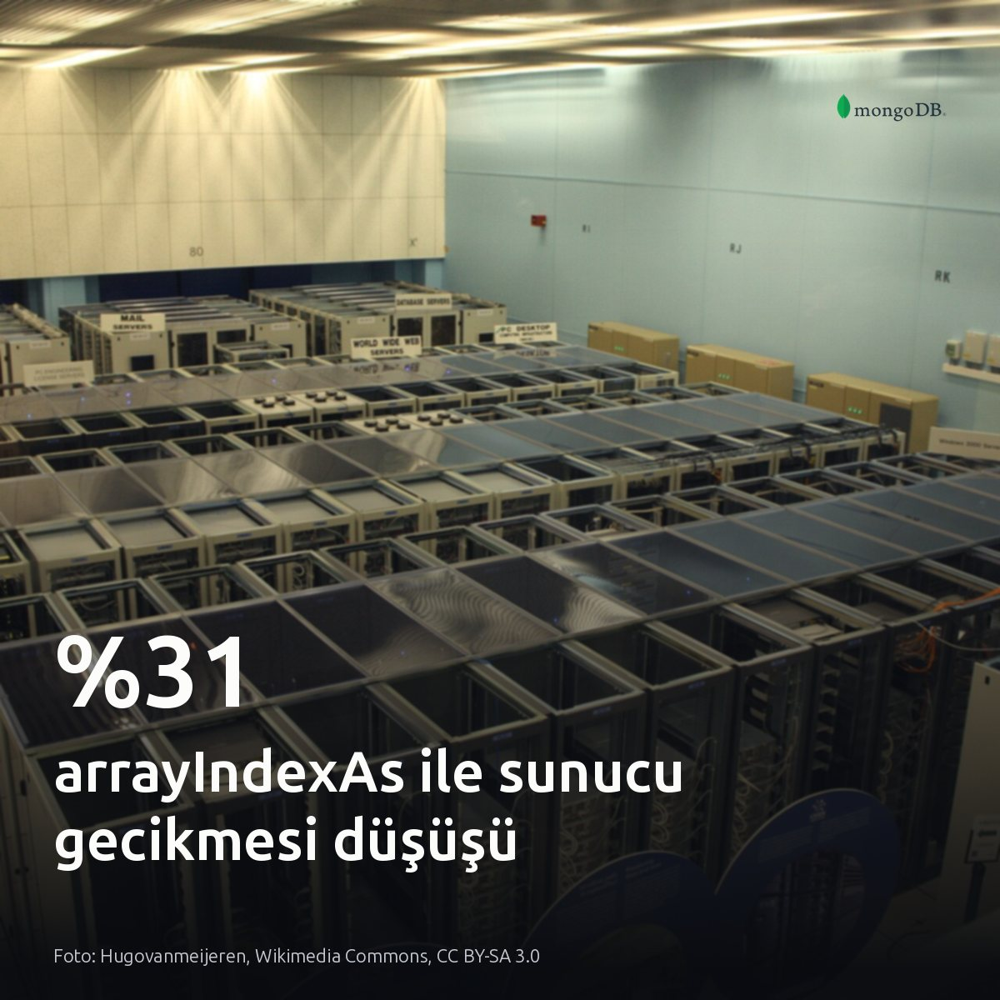
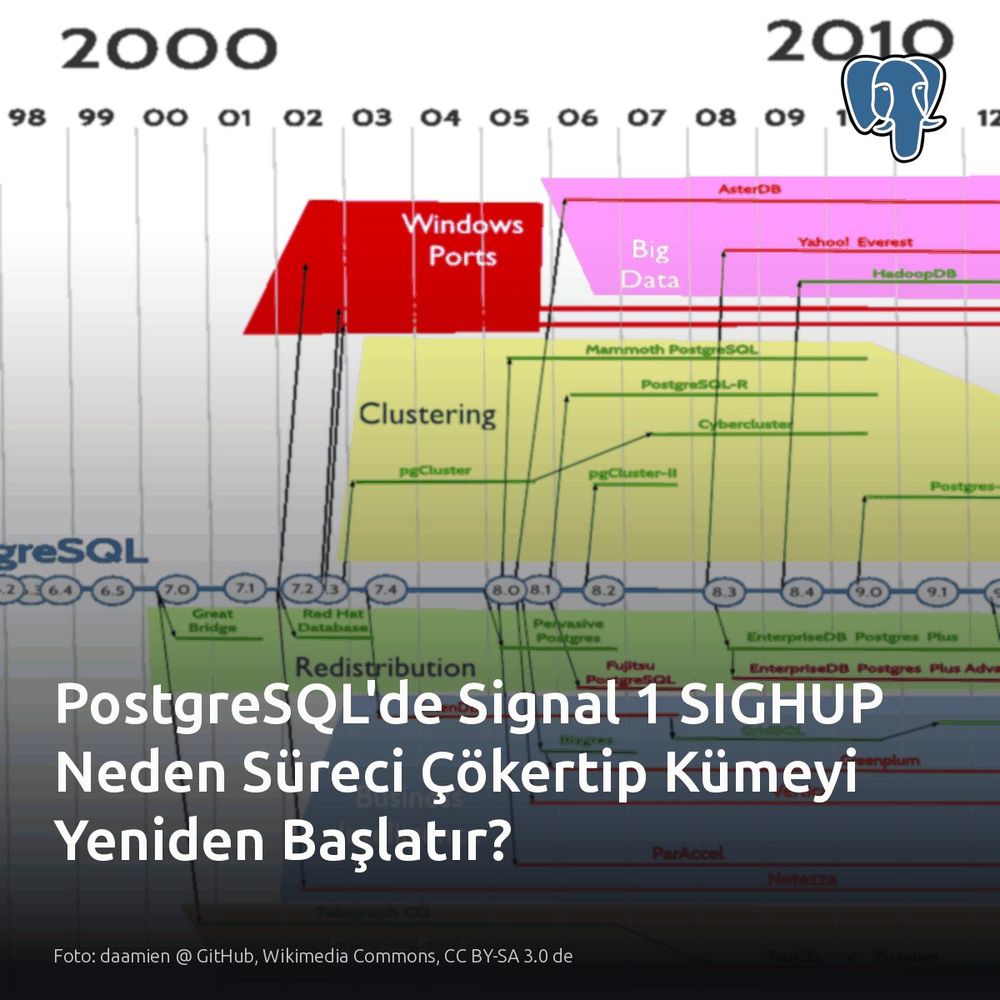
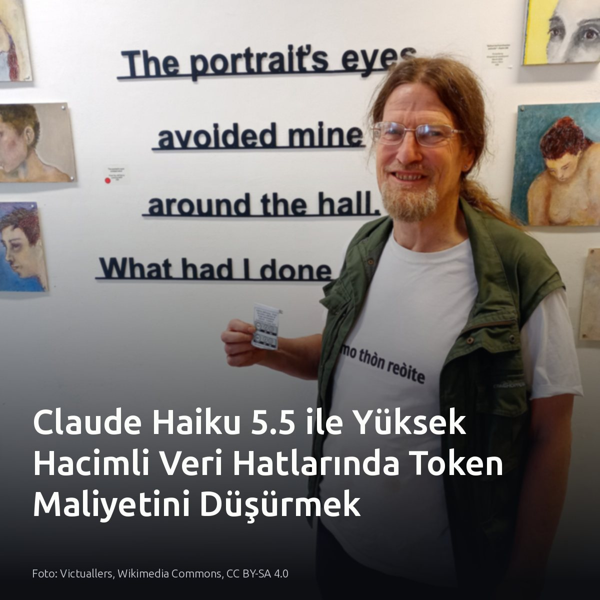
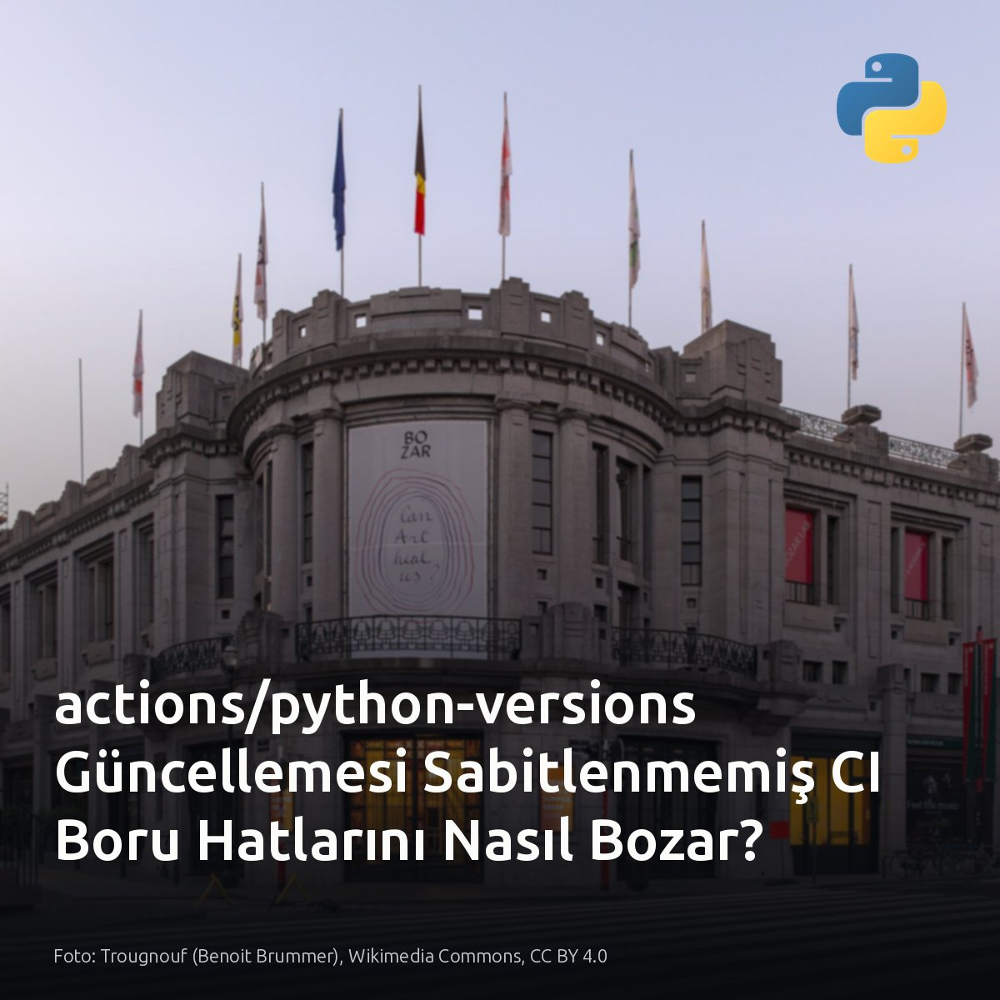

Metni kopyala, kartı indir, LinkedIn'de yapıştır. Bağlantılar gönderiye değil ilk yoruma.

MongoDB 8.3 ile gelen arrayIndexAs, $map ek yükünü %31 azaltıyor. 320 bin elemanlı dizide range ve arrayElemAt hilesini kaldırmak, sunucu gecikmesini 134 milisaniyeden 102 milisaniyeye çekiyor. Ek aşama yok. Ancak eşzamanlı 10 istemcide bu fark %5 seviyesine geriliyor. #mongodb #database #performanceKartı indir
Kaynak ve benchmark verileri: Kart ve ölçüm detayları (dev.to veritabanı): https://dev.to/alexgeorgiev17/mongodb-83s-arrayindexas-cuts-a-map-with-index-workarounds-overhead-by-up-to-31-409p

PostgreSQL loglarında görülen Signal 1, bazen bir reload değil tüm bağlantıların kopmasıdır. Sinyal tüm süreç grubuna dağılır. Normalde ana süreç yapılandırmayı yeniler; fakat sinyali yakalamayan alt süreç Signal 1 ile anında sonlanır. Postmaster, alt sürecin sinyalle kapandığını gördüğü anda paylaşılan belleğin bozulmasından şüphelenir. Bellek bütünlüğünü korumak için tüm bağlantıları keser, belleği sıfırlar ve WAL kayıtlarını baştan oynatır. Postmaster kendi PID değerini koruduğu için sunucu dışarıdan hiç yeniden başlamamış gibi görünür. Terminalden sızan kontrolsüz sinyal, tüm veritabanını kurtarma moduna sokmaya yeter. #postgresql #linux #dbaKartı indir
İnceleme ve kaynaklar: - Shridhar Khanal, The Database Restarted Without Restarting: The Basics of PostgreSQL Signals: https://postgr.es/p/9xr - Görsel kaynağı: daamien @ GitHub, Wikimedia Commons (CC BY-SA 3.0 de)

Canlı veri hattında çıkarımı 2,5 kat hızlandırmak için amiral gemisi model gerekmiyor. Ölçü net: gecikme. Telemetri akışı, log ayrıştırma ve hızlı yönlendirmede Claude Haiku 5.5 token maliyetini tabana çekerken gecikmeyi yaklaşık yarıya indiriyor. Buna karşılık, çok adımlı şema tasarımı ve karmaşık SQL optimizasyonu gerektiren kritik işlerde amiral gemisi modellerin derin muhakeme yeteneği vazgeçilmez kalıyor. Kuyruk gecikme sürelerine ve servis bazlı token tüketim dökümüne bakın. #dataengineering #llmops #veritabanıKartı indir
Kaynaklar ve görsel bilgisi: - Görsel: Victuallers, Wikimedia Commons, CC BY-SA 4.0 - Asana ve Box test verileri: https://www.anthropic.com/claude-haiku-5-5 - Model mimarisi ve tokenizer detayları: https://platform.claude.com/docs/en/models/haiku-5-5/overview - Sürüm analizi: https://simonwillison.net/2026/Oct/7/claude-haiku-5-5/

actions/python-versions deposuna gelen Python 3.15.0, sabitlenmemiş CI hatlarını kilitleyebilir. Açık uçlu sürüm kuralları yeni çalışma zamanını doğrudan çekerken, psycopg gibi C uzantılı veritabanı sürücülerinde hazır wheel bulunmuyor. Derleme kaynak koda düşüyor. Eksik derleyici paketleri yüzünden boru hatları peş peşe kırılıyor. Yalnızca saf Python kütüphaneleri çalıştıran ya da imaj seviyesinde sürüm sabitleyen boru hatları bu derleme darboğazından etkilenmez. #githubactions #python #devopsKartı indir
Kaynaklar ve referanslar: - Python 3.15.0 GitHub Actions güncellemesi: https://simonwillison.net/2026/Oct/10/python-actions/ [S1] - Görsel kaynağı: Trougnouf (Benoit Brummer), Wikimedia Commons, CC BY 4.0
Yerel donanımla bulut faturasını sıfırlama hesabı, 614 GB/s bellek bant genişliği sınırına çarpıyor. M5 Max üzerinde 65 GB boyutundaki GPT-OSS 120B modelini ek bulut maliyeti olmadan çalıştırmak kâğıt üzerinde mümkün. Darboğaz hesaplama değil, bellek. Nitekim RTX 5090, daha yüksek bellek bant genişliği sayesinde M5 Ultra karşısındaki avantajını koruyor. Bu donanım yalnızca verinin dışarı çıkamadığı katı regülasyonlarda doğru. Dalgalı iş yüklerinde donanım amortismanı, bulut faturasını fazlasıyla aşıyor. #localllm #yapayzeka #donanimKartı indir
Yazıda geçen kaynaklar ve inceleme bağlantıları: - Görsel kaynağı: Richard Smith, Wikimedia Commons, CC BY 2.0 - MacStories (M5 Ultra ve RTX 5090 karşılaştırması): https://www.macstories.net/stories/m5-ultra-mac-studio-review-the-dream-mac-for-local-ai-agents/ - tbreak (M5 Max bellek bant genişliği ve yerel LLM performansı): https://tbreak.com/mac-studio-m5-max-review-local-ai/ - The Verge (Yerel yapay zekâ deneyimi): https://www.theverge.com/ai-artificial-intelligence/1008484/learning-local-ai-hermes-qwen-model-mac-studio-testing-diary-progress